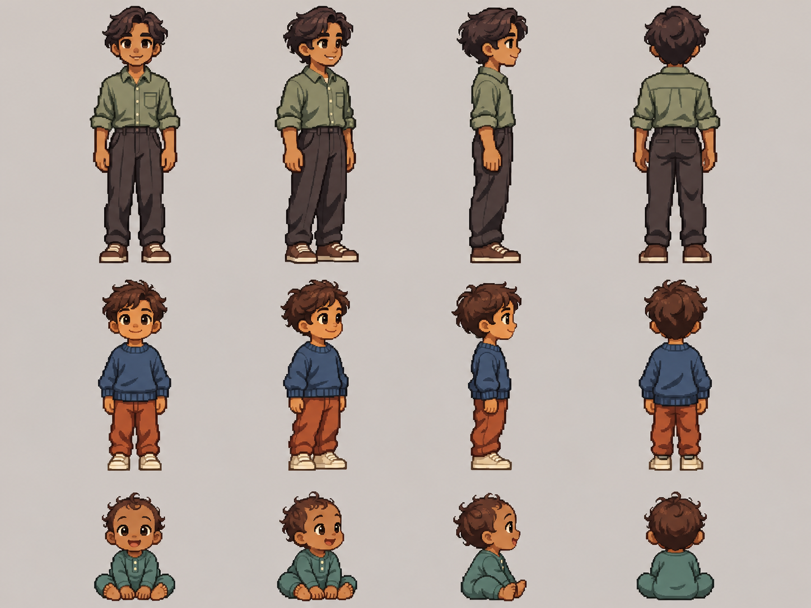

人物造型对照
同一人物配方、镜头与动作帧，分别用两版实时切片绘制。
双人动作按搭档的位置取姿势，两侧都显示正在对照的人物。看标准搭档的追视动图

青色为双眼中心，金色为鼻尖与鼻底，玫红为唇缝中央与两侧嘴角，蓝色为颏尖。标记可透过头发和远侧脸面看到。
人物对照
选出整体造型更协调的一侧。每组的左右顺序已打乱，完成 32 组后揭晓。
分龄结果
| 年龄 | 偏好原版 | 相当 | 偏好试作 |
|---|



同一人物配方、镜头与动作帧，分别用两版实时切片绘制。
双人动作按搭档的位置取姿势，两侧都显示正在对照的人物。看标准搭档的追视动图
青色为双眼中心，金色为鼻尖与鼻底，玫红为唇缝中央与两侧嘴角，蓝色为颏尖。标记可透过头发和远侧脸面看到。
选出整体造型更协调的一侧。每组的左右顺序已打乱，完成 32 组后揭晓。
| 年龄 | 偏好原版 | 相当 | 偏好试作 |
|---|
